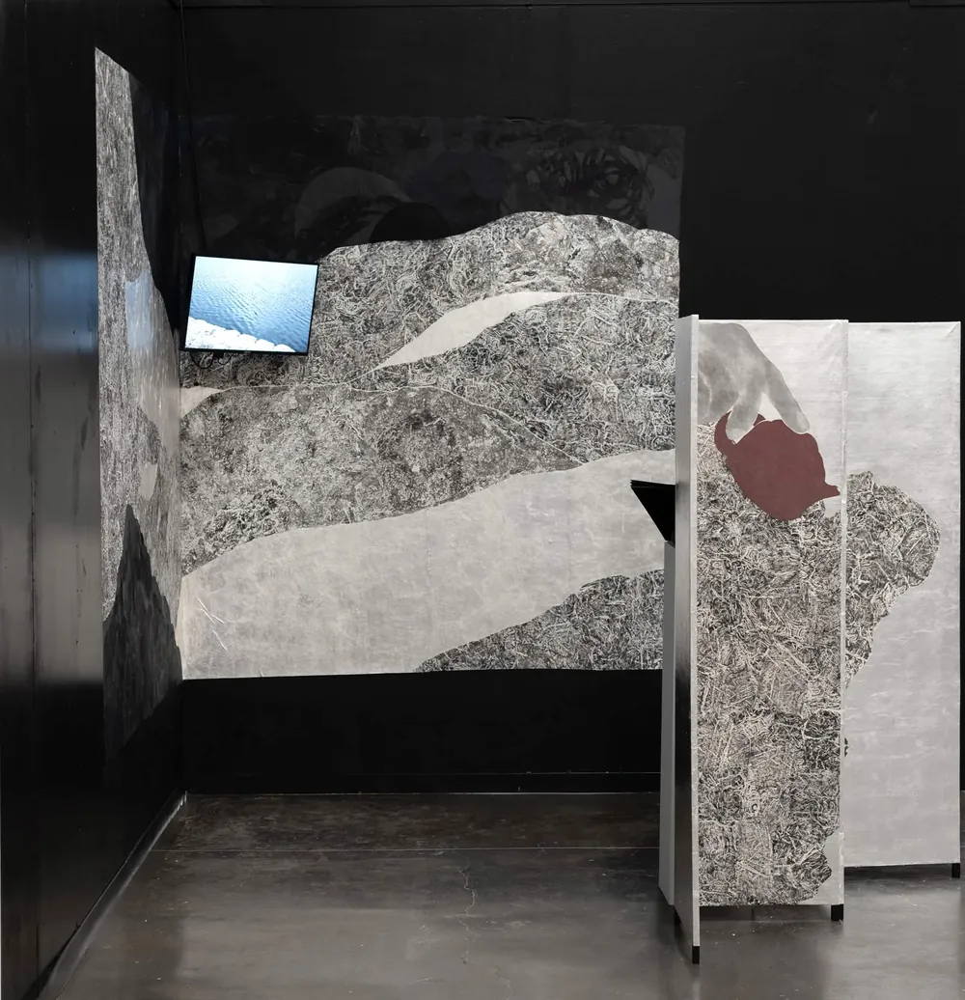

Gesture of Time时间的姿态Watch on YouTube ↗在 YouTube 观看 ↗
Process创作过程 — 22 frames帧How the ink arrives墨,如何到来
Click a frame to look closer. The red thread follows the moments that matter most.点击任一画面可细看。红线串起最关键的几个瞬间。

Gesture of Time时间的姿态Watch on YouTube ↗在 YouTube 观看 ↗
Click a frame to look closer. The red thread follows the moments that matter most.点击任一画面可细看。红线串起最关键的几个瞬间。